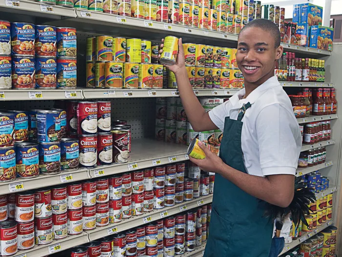

Part-Time Jobs for Youth: More Than Just a Paycheck
Learning Responsibility and Financial Value
Youth nowadays usually do part-time jobs as part of their lives as they want to learn responsibility and other things, and such work is more than just a way to earn money. They not only have a job but also learn about the real working world for the first time. Here, apart from learning to punctually show up and be responsible, they will learn to work with other people, handling customers or bosses who are some times difficult. Whether the money comes from flipping burgers, stocking shelves, babysitting or tutoring other , it's not just pocket money anymore. It's something they have to work for and spend on, which means they gradually learning about budgeting, and understanding the value of dollars. Buying something like a phone, taking a trip, or paying for someones school lunch.

The Challenges of Student Work
This is, of course, an experience of the other side. While many teens or students work and save money to go to college or help their families, there are others who find themselves in very unstable jobs, low paid, with no or little protection, and are constantly tired or burnt out while being away for long classes
Social Media and Spending Pressure
Also, with the cost of living and people wanting to spend more money because of social media, the necessity to work and spend becomes all-consuming, and as a result, the deeper truth regarding earning a livelihood are overlooked. Making money becomes the only reason to do a job.

Conclusion
All in all, a part-time job can be a fantastic way to develop financial skills, self-confidence but of course, if it happens while one is learning, is fairly compensated, and the person realizes that the worth of a youth is so much more than their hourly wage.